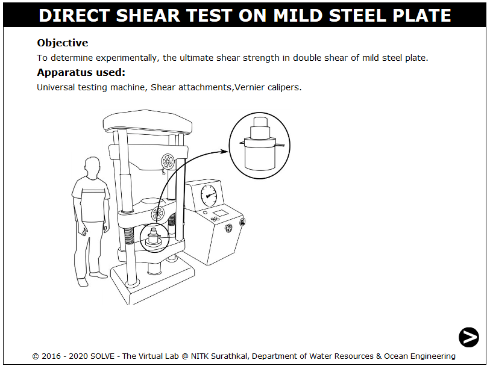
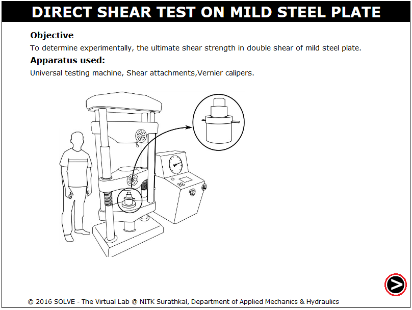
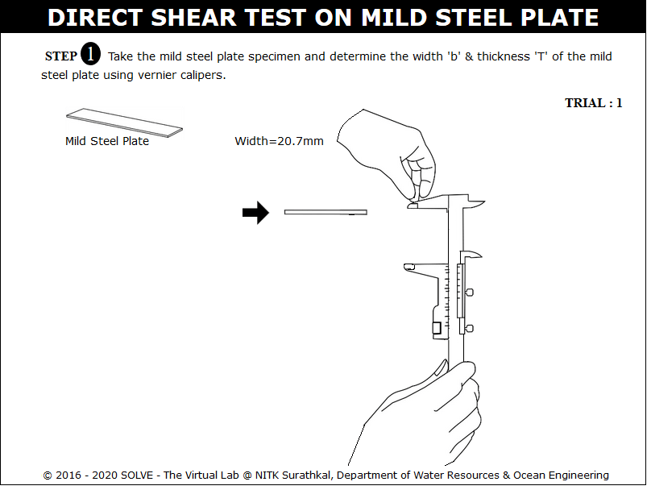
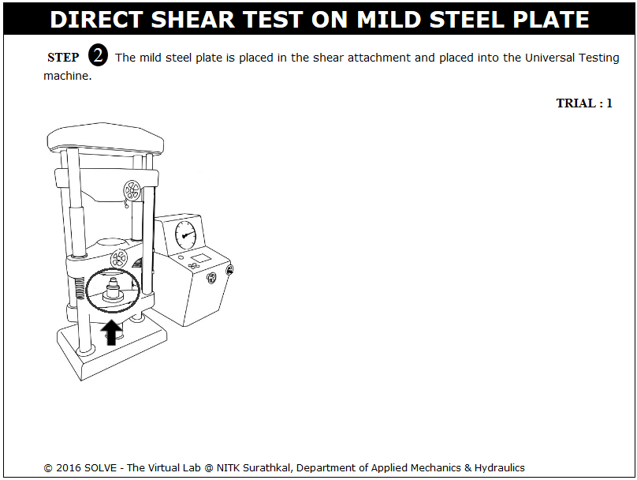
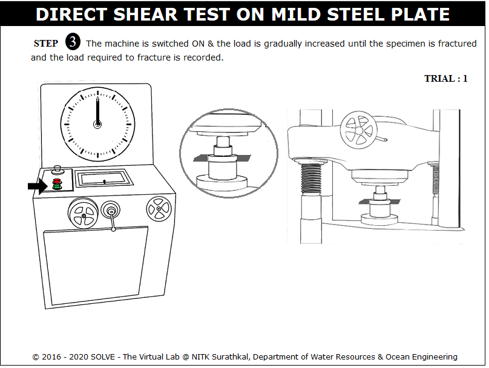
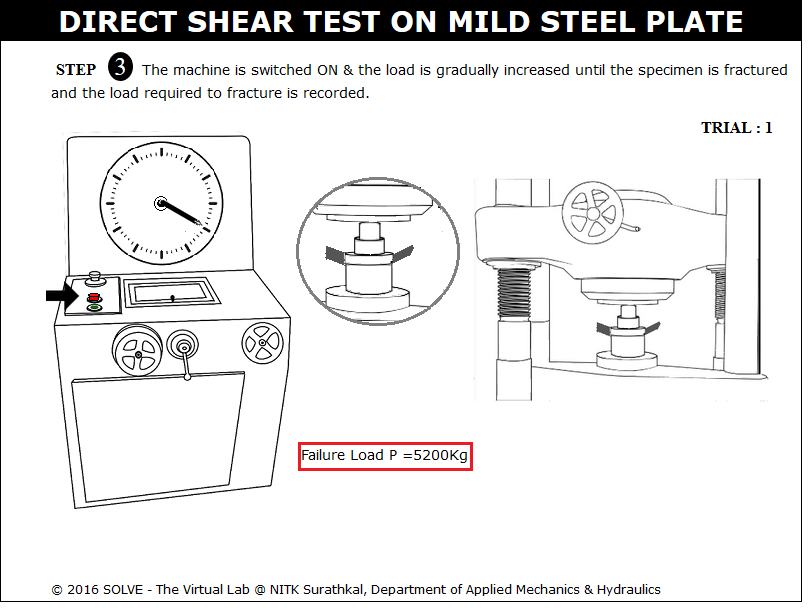
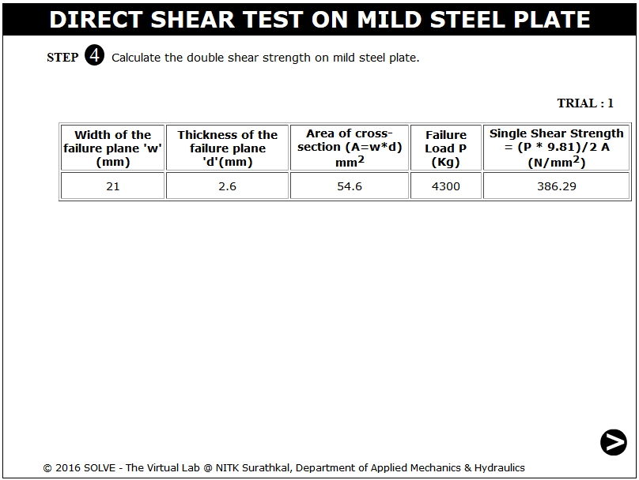
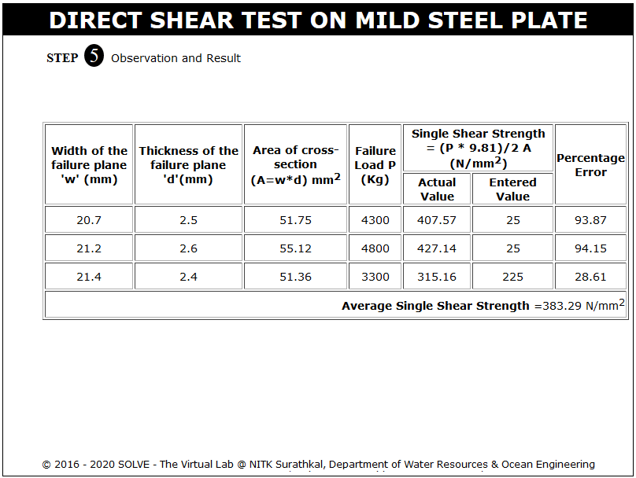

Shear stress exists when two parts of a material tend to slide across each other in any typical plane of shear upon application of force parallel to that plane. In actual practice when a beam is loaded the shear force at a section always comes to play along with bending moment.The effect of shearing stresses is quite negligible compared to bending stress. But sometimes, the shearing stress at any section is to be given much importance in design calculations. Shear test is performed by using universal testing machine.
There are two types of universal testing machines i.e., 1. Screw type 2. Hydraulic type. Hydraulic machines are easier to operate.They have a testing unit and control unit connected to each other with hydraulic pipes. It has a reservoir of oil, which is pumped into a cylinder and has a piston. By this arrangement the piston is made to move up. Same oil is taken in a tube to measure the pressure. This causes movement of the pointer which gives reading for the load applied.
The test is conducted by placing the shear test attachment on the lower table, this attachment consist of a cutter. The load is applied such that the specimen breaks in two or three pieces. If the specimen breaks in two pieces then it will be in single shear & if it breaks in three pieces then it will be in double shear. If there is only one cross section which resist the failure, the material is said to be in single shear and the average ultimate strength in single shear will be equal to the failure load divided by the area of cross section.
According to the standards the speed of testing or the rate of separation of the cross-heads at any moment during the test shall not be greater than 10 mm/min. The maximum load divided by the combined cross-sectional area of the two planes gives the double shear strength. This shall be calculated from the following formula:
Practical cases of shear failure:

- IS 5242-1979: Method of test for determining shear strength of metals.

OBJECTIVE: To determine experimentally, the ultimate shear strength in double shear of mild steel plate. STEPS:
- Click on the direct shear test on mild steel plate file, a window will open as shown below.

- Click on the NEXT button to move to the next step.

- Here click on vernier calliper to measure width and thickness of the mild steel plate, then click on NEXT button to see the placing of the test set up.

- After placing the specimen in UTM move to next step by clicking on the NEXT button.

- Switch on the machine by clicking on green button and apply load gradually.

- Load is applied till failure of the specimen then click on the red button to stop the machine.

- The double shear strength on mild steel plate is shown in the tabular column.

- Same steps are repeated for further trials.



- Write a formula for double shear strength?
- How the specimen breaks in double shear?
- What is shear strength?
- What is the difference between single shear and double shear failure?
- Is the direct shear stresses are same in single and in double shear?

Check your ability to answer some of the questions relevant to the simulation that you used.
Get Started

- IS 5242 (1979): Method of Test for Determining Shear Strength of Metals, First Revision, 2006.
- Hearn E,J., Mechanics of Material, Pergaman Press, England, 1972.
- Beer and Johnston E.R., Mechanics of Material, 3rd Edition, Tata McGraw Hill,New-Delhi, 2007.
- YEN C.S, Stress distribution in a single shear sheet specimen, ASTM International, September 3rd, 2015.
- Gambhir , Building and Construction Materials, 2014.
- S.S. Bhavikatti and K.G. Rajashekarappa, Engineering Mechanics, Wiley Eastern Ltd.